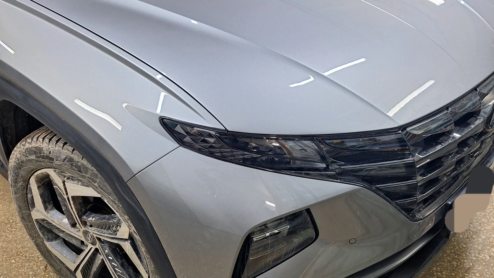
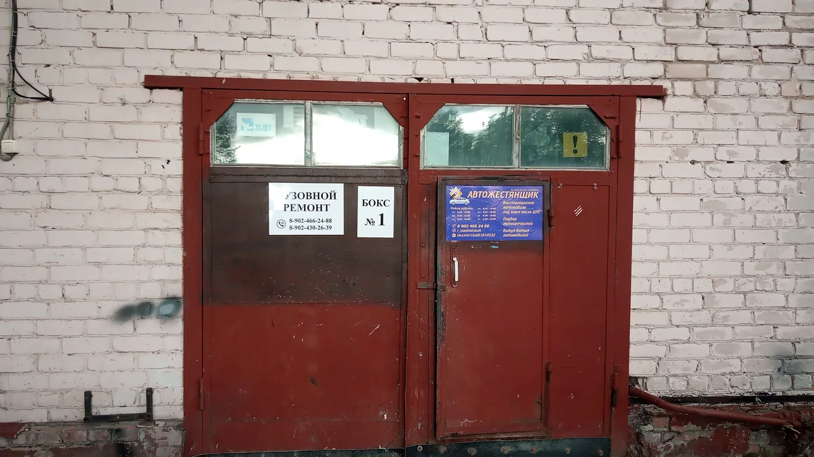
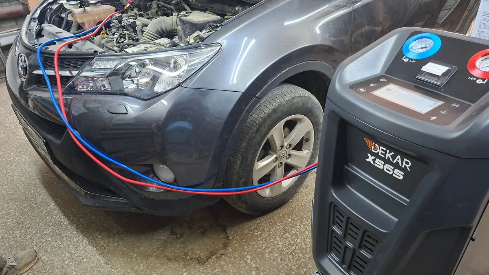
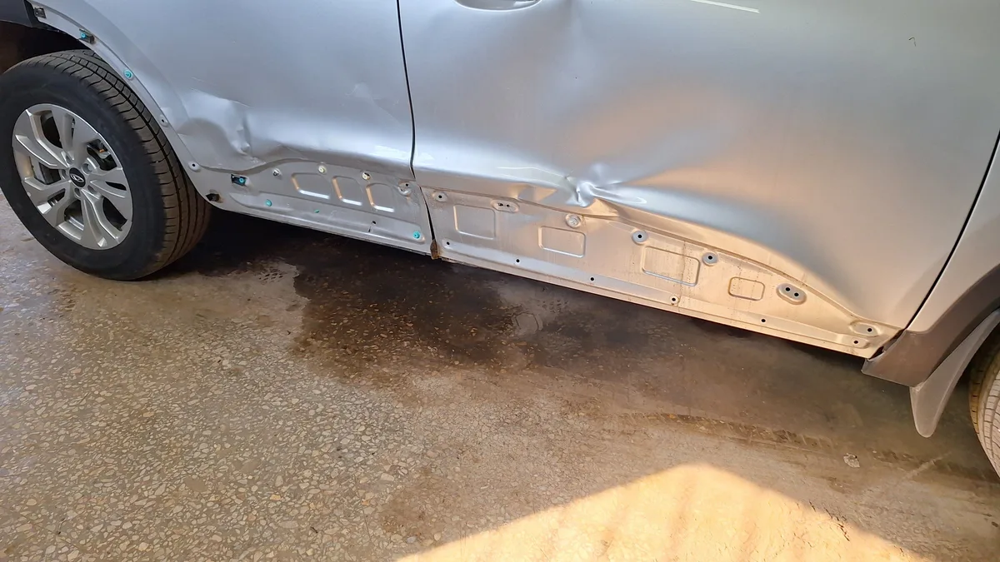

Кузовной ремонт в Йошкар-Оле · Сернурский тракт, 18
Кузовной ремонт в Йошкар-Оле: бамперы, вмятины, покраска
Автожестянщик 12 на Сернурском тракте: кузовной ремонт, покраска, ремонт бамперов, сварочные работы и заправка автокондиционеров. Работаем ежедневно.
- 4,5 на Яндекс Картах, 16 отзывов
- Кузовной ремонт, покраска, бамперы, сварка
- Ежедневно с 09:00 до 18:00

Услуги: Автожестянщик 12 в Йошкар-Оле
Входит
- Кузовной ремонт после ДТП и мелких повреждений
- Покраска автомобилей
- Ремонт бамперов
- Сварочные работы
- Заправка и обслуживание автокондиционеров
Отдельно, если нужно
- Запись на время через сайт: заявка уйдёт в WhatsApp, время подтвердят в ответ
- Адрес: Йошкар-Ола, Сернурский тракт, 18
- Оплата наличными, безналичная и банковским переводом
Цены на кузовной ремонт в Йошкар-Оле
Стоимость кузовного ремонта зависит от повреждения. Мастер называет её после осмотра автомобиля, до начала работ.
Кузовные работы
- Кузовной ремонтуточнить
- Покраскауточнить
- Ремонт бамперовуточнить
- Сварочные работыуточнить
Кондиционеры
- Заправка, обслуживание и диагностика кондиционеров3000 ₽
Цена на заправку кондиционеров давно не обновлялась. Точные цены уточняйте по телефону или в WhatsApp.
Как записаться на кузовной ремонт в Йошкар-Оле
- 01
Выбрали услугу и время
Укажите услугу, день и час в форме на сайте - заявка уйдёт в мессенджер. Марку, год и что беспокоит напишите в сообщении.
- 02
Подтвердили время
Время подтверждаем в мессенджере или по звонку: +7 (902) 466-24-88.
- 03
Осмотр и согласование
Мастер осматривает автомобиль, называет работы и стоимость. Дальше - по вашему решению.
- 04
Выдача автомобиля
Осмотрите результат вместе с мастером до оплаты.



Что пишут клиенты Автожестянщика 12
Умеренные цены и качество
«Хочу выразить благодарность за быстрый и очень качественный ремонт при достаточно умеренной цене» - Роженцов Алексей Аркадьевич, 11 апреля.
Быстро, раньше срока
«Очень быстро и качественно сделали ремонт. Значительно раньше заявленного срока» - Евгений Д., 26 декабря 2025.
Цвет подобран точно
«Цвет подобран точно, следов ремонта не видно» - banbridge, 8 мая.
Отзывы с Яндекс.Карт
«Быстро отремонтировали и покрасили. Иван всё объяснил и показал. Огромное спасибо.»
STYLE · 29 ноября 2025
«Отличный сервис и отношение. Приняли в тот же день и выполнили всё оперативно (восстановили бампер и крыло), цвет подобран точно, следов ремонта не видно. Только положительные эмоции, спасибо!»
banbridge · 8 мая
«Очень быстро и качественно сделали ремонт. Значительно раньше заявленного срока. Очень приемлемо по ценам. Непременно ещё обращусь к Ивану.»
Евгений Д. · 26 декабря 2025
Отзывы с карточки на Яндекс.Картах, без правок.
Частые вопросы
Какие работы делаете в Йошкар-Оле?
Кузовной ремонт, покраска автомобилей, ремонт бамперов, сварочные работы, заправка автокондиционеров.
Сколько стоит кузовной ремонт?
Стоимость зависит от повреждения и объёма работ. Мастер называет её после осмотра автомобиля, до начала работ. Заправка, обслуживание и диагностика кондиционеров - 3000 ₽ (цена давно не обновлялась). Уточнить можно по телефону +7 (902) 466-24-88.
Нужно ли записываться заранее?
Лучше записаться: выберите услугу, день и время в форме на сайте, заявка откроется в WhatsApp. Можно позвонить: +7 (902) 466-24-88.
Когда вы работаете?
Ежедневно с 09:00 до 18:00.
Как оплатить работы?
Наличными, безналичным расчётом или банковским переводом.
Где находится бокс?
Йошкар-Ола, Сернурский тракт, 18.
Запишитесь на кузовной ремонт в Йошкар-Оле
- Адрес
- Сернурский тракт, 18, Йошкар-Ола
- Часы
- ежедневно 09:00-18:00
- Телефон
- +7 (902) 466-24-88